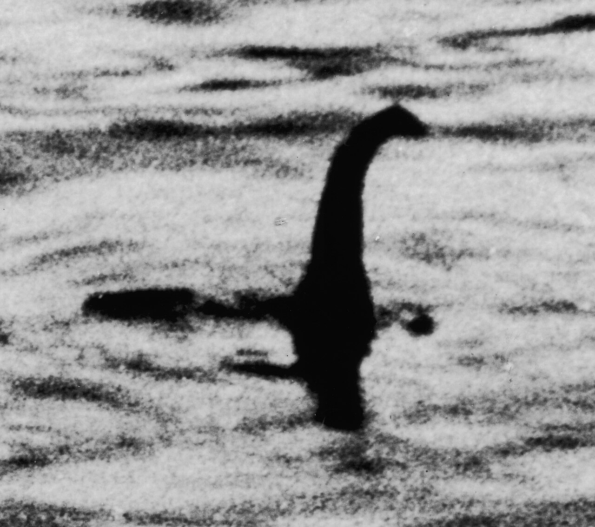

Fiche · créature légendaire vivant dans le loch Ness, Écosse
Monstre du loch Ness
Y a-t-il un monstre dans le loch Ness ?

Résumé
Le monstre du loch Ness, que l'essor du tourisme a surnommé dans les années 1930 « Nessie » pour supprimer le côté effrayant qu'il avait jusque-là, est une créature lacustre légendaire supposée vivre, ou avoir vécu, dans le loch Ness, un lac des Highlands en Écosse.
Repères (Wikidata)
- Lieu
- Royaume-Uni
- Nature
- créature légendaire, créature lacustre
- Identifiant
- Q49658
Ce qu'on sait
- La « photographie du chirurgien », publiée en 1934, est un canular : sa fabrication a été reconnue en 1994.
- Des analyses d'ADN environnemental menées en 2018 n'ont pas trouvé de trace d'un grand reptile.
Ce qu'on ignore
- Les observations anciennes et les témoignages restent difficiles à vérifier une à une.
- Aucune preuve scientifique ne soutient l'existence d'un grand animal inconnu dans le loch.
Maquette. Brouillon rédigé avec une IA, statut de démonstration, rien n'a été relu par un spécialiste. Résumé : Wikipédia (CC BY-SA, français). Repères : Wikidata (CC0). Image : Wikimedia Commons, licence indiquée sous l'image.